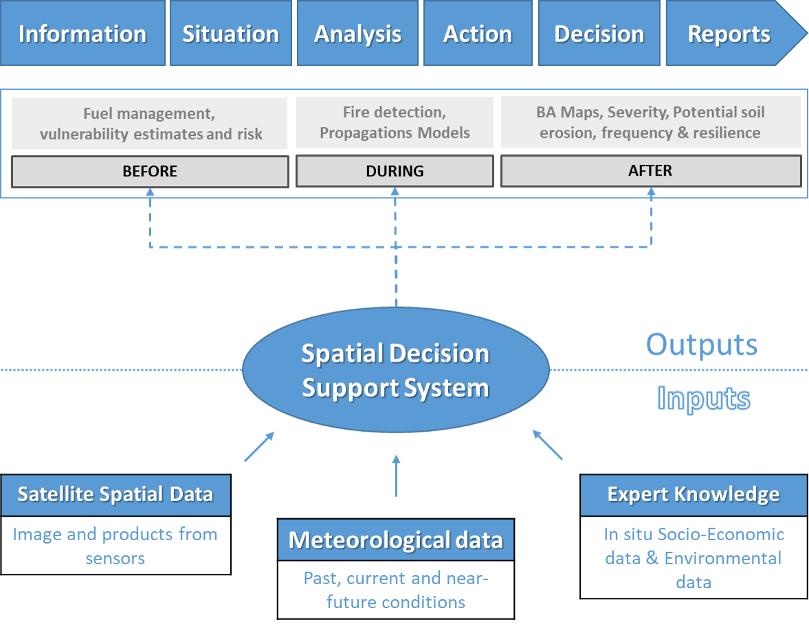
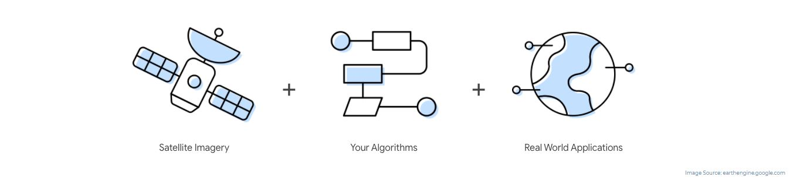

Decision Support System for Forest Fires: DSS-FIRE
In recent years, wildfires have dramatically increased in size frequency and impact, often straining the capacity of management systems especially in developing countries, producing large environmental and economic losses and having an impact on human lives. The Forest Fire Decision Support System Project (DSS-FIRE) grew out of the need to improve these decision-making processes, as well as to take advantage of improvements in earth observation (EO) technology, cloud computing, information supply and geospatial analysis.
The Forest Fire Decision Support System DSS-FIRE is an initiative of the United Nations Platform for Spatial Information for Disaster Management and Emergency Response UN-SPIDER, of the United Nations Office for Outer Space Affairs UNOOSA. The System systematically collects relevant information on how to use Earth observation data and information for disaster risk management and emergency response to wildland fires, especially in developing countries. The DSS-FIRE System aims to bring together the different sources of information available to provide a global view and assessment of fire regimes and their effects anywhere in the world, at national or regional level. It is a tool to support the operational management of forest fires in all phases of risk and disaster (Before, During and After Fire).
How is the DSS structured?
A spatial decision support system (SDSS) is an information system that assists in decision-making activities that require judgment, determination and sequencing of actions in emergency or disaster situations. The information system assists middle and senior management of risk and disaster management units by analyzing huge volumes of satellite data and information that can help decision makers solve problems and/or compare options.
Geospatial Decision Support System Model (GDSS)
What data is included?
DSS-FIRE uses and analyzes information available from the various ongoing activities of the European Union's Earth Observation Programme (Copernicus), the Landsat satellite imagery of Earth program of the NASA and USGS, the Copernicus Emergency Management Service (CEMS-Fire), the European Forest Fire Information System (EFFIS), the Global Terrestrial Observing System (GTOS), the Global Imagery Browse Services (GIBS), and a complete set of datasets and other wildfire data. The system is a complementary tool to the existing Fire Information for Resource Management System (FIRMS) that distributes Near Real-Time (NRT) and the NASA - GEO-GWIS supporting systems included in the ROSES program.
Cloud computing and geospatial data science in DSS-FIRE
The development of cloud computing and big data analysis has led to various methods of disaster management. To reduce the probability of fires, it is essential to predict fire risk by mining massive historical fire data. Considering the current advantages offered by platforms such as Google Earth Engine (GEE) by allowing processing a large volume of images in the cloud, through parallel data processing.
DSS-FIRE Advantages
The platform is easy to use, intuitive, linear and scalable to any region or type of fire. DSS-FIRE integrates the various applications used to manage incidents or phases into a single system, streamlining the analysis and reporting processes. Some of the advantages offered by the system are:
- It is a platform with a communication protocol that can be implemented in any country or region (HTTP / HTTPS).
- At the user level, no specialized software or in-depth knowledge of any programming language is required.
- The system update is a simple and automatic operation carried out by the data services of international agencies and earth observation programs (ESA, NASA).
Disclaimer
Reference to the external websites below does not imply endorsement by the United Nations Office for Outer Space Affairs (UNOOSA) or UN-SPIDER of their contents. Any views expressed are those of the authors and do not necessarily reflect the policies or views of UNOOSA. The hyperlinks are provided solely for informational purposes. The designations employed and the presentation of the material in this paper do not imply the expression of any opinion whatsoever on the part of the Secretariat of UNOOSA/UN-SPIDER or the United Nations concerning the legal status of any country, territory, city or area or of its authorities, or concerning the delimitation of its frontiers or boundaries. References and maps obtained from external sources might not conform to the UN Editorial guidelines.